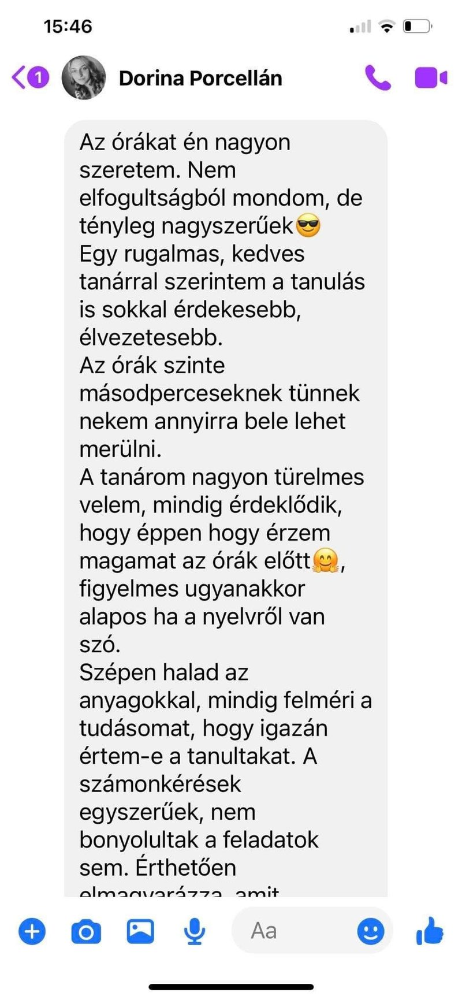
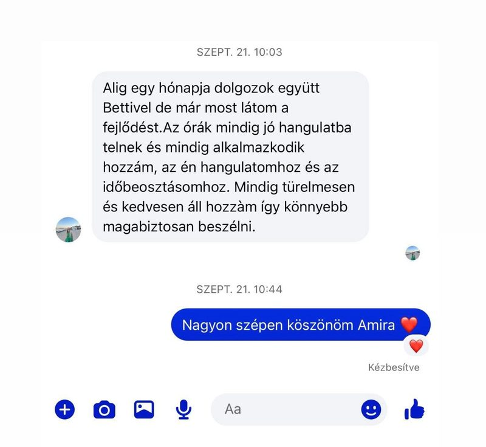
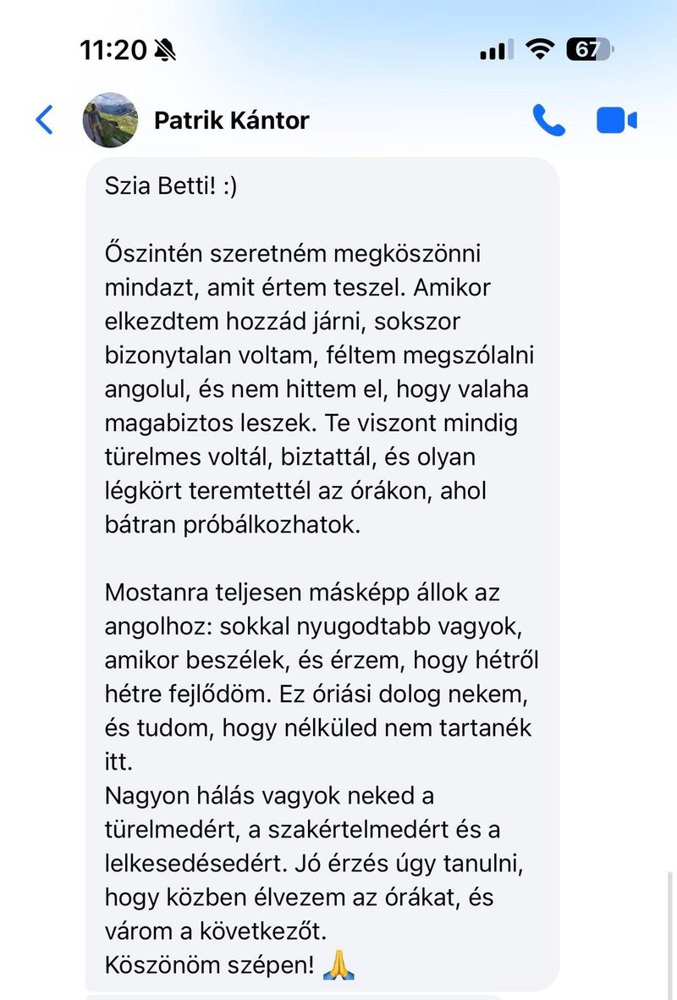
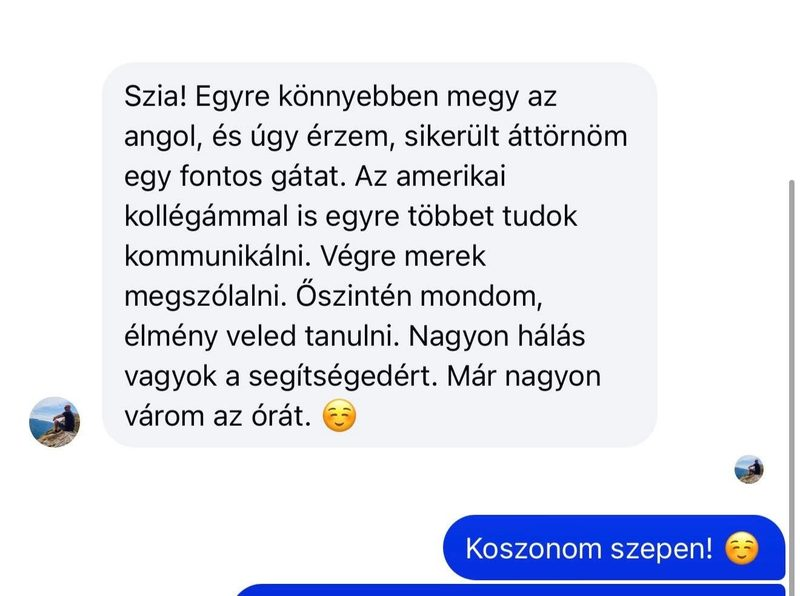
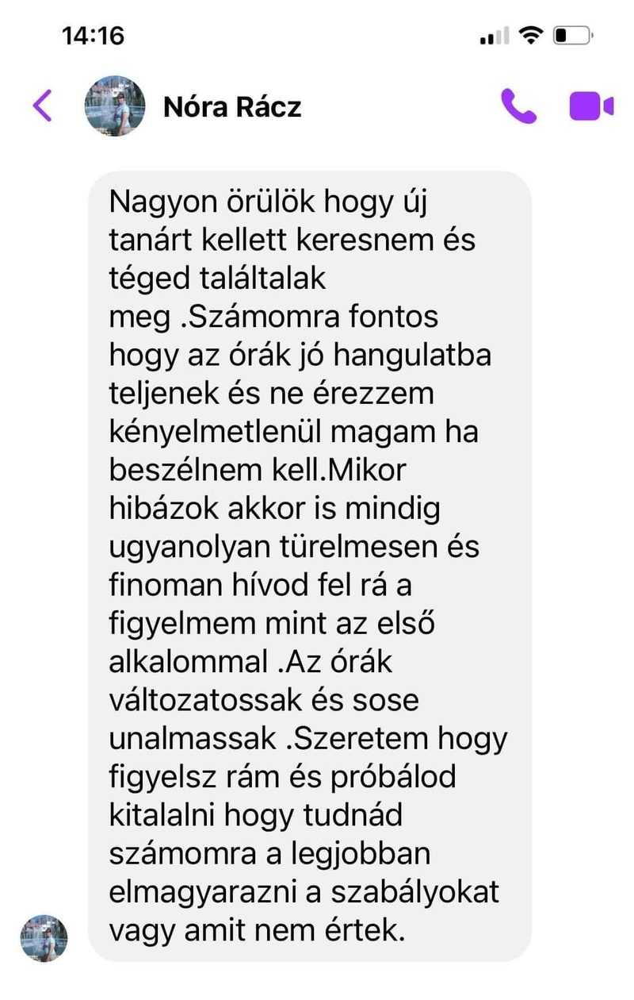
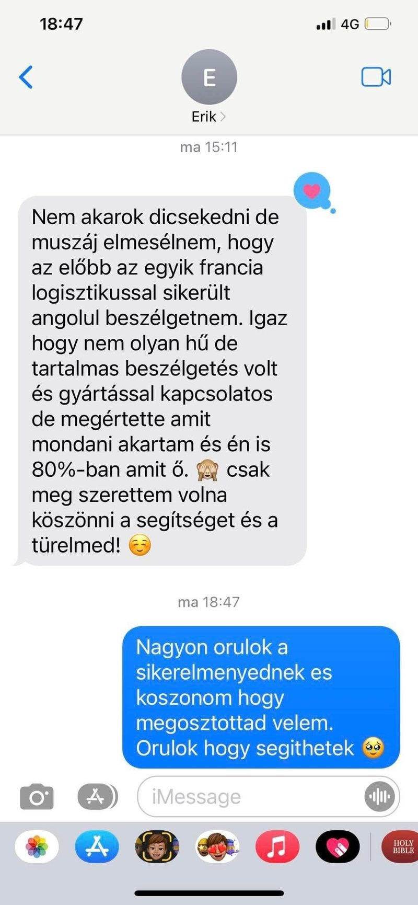
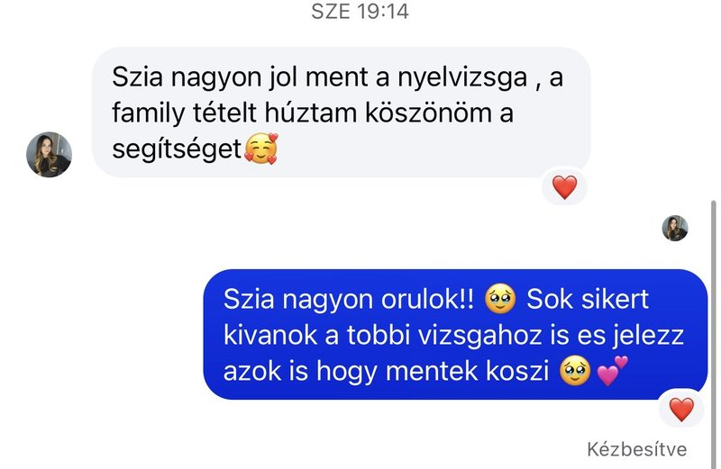
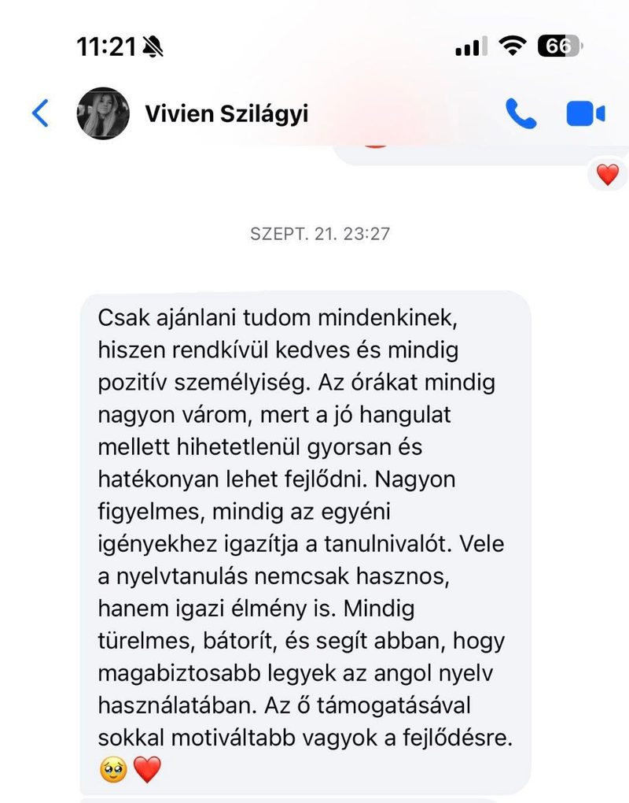
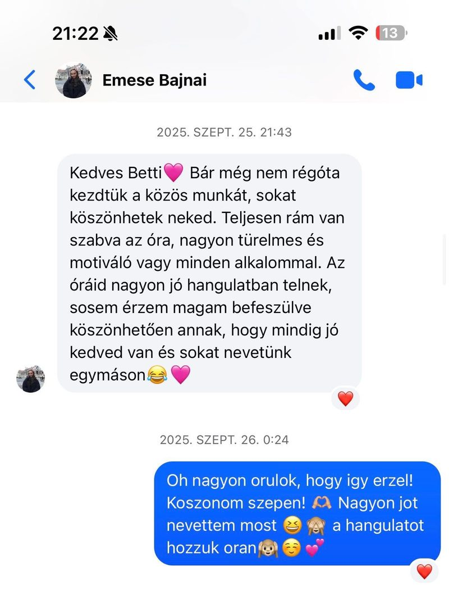
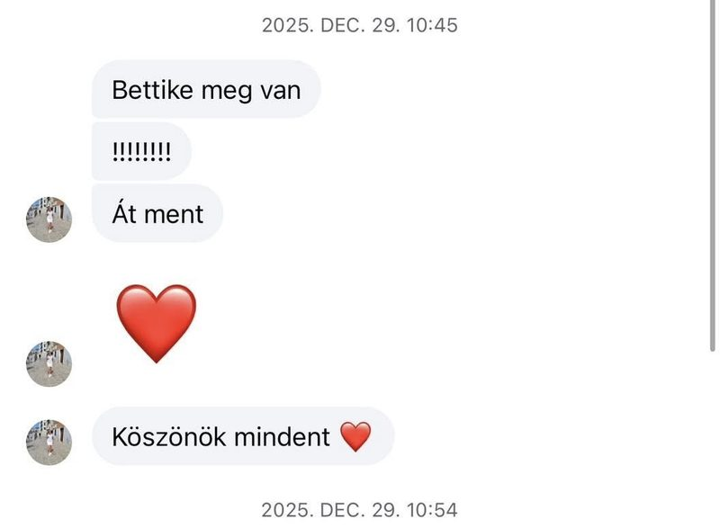

Bettina Baranyi · Angol Mentor Program
Lépésről lépésre felépített rendszer 500+ tanuló tapasztalatából.
Szintfelmérő · 100% ingyenes · 24 órán belül válasz










Amire gondolod, hogy szükséged lenne
A legtöbb tanulóm azt hitte, hogy ezek a dolgok mind szükségesek. Nem azok. Ezért nem jutottak előbbre — egy rendszer nélkül próbálkoztak.
Elég, ha az alapok megvannak — a többit együtt építjük fel, a te valódi beszédhelyzeteidre szabva.
A rendszer heti 1-2 órára épül + rövid, célzott gyakorlásra. Ez mellett dolgozol, utazol, élsz.
A nyelvtudás nem adottság kérdése, hanem módszeré. Ezt a tanulóim naponta bizonyítják.
Ítéletmentes, biztonságos környezetet kapsz, ahol a hibázás a fejlődés része — nem a kudarcé.
A tudásod nincs elveszve — csak szétszóródott. Visszarendezzük és aktívvá tesszük, ami már benned van.
Nem kérem, hogy bízz bennem vakon. Kérem, hogy csináld velem 4 hétig — és utána döntsd el.
A rendszer egyszerűsíti a belépést. Néhány hét alatt érezhetően magabiztosabb leszel — feltéve, hogy elindulsz.
Kitöltöm a szintfelmérőtEz történik, ha csatlakozol
A programom nem egy újabb tanfolyam — hanem egy komplett rendszer, ami az órákon kívül is dolgozik érted.
Személyre szabott Notion diákoldal, 24/7 AI visszajelzés, lépésről lépésre felépített platform — minden egy helyen. Nem kell kitalálnod, mit csinálj két óra között: pontosan tudni fogod.
A passzív és aktív tudás között van egy rés — és ezt nem akarattal, hanem strukturált gyakorlással lehet áthidalni. A módszer erre van tervezve, nem a motivációdra.
Business meeting? Amerikai kolléga? Nyelvvizsga? A mentoráláson pontosan arra készítelek fel, ami rád vár. Nem általános angol — a tiéd.
Pár héten belül érezhető változás — főleg önbizalomban. Az igazi áttörés általában 4-8 héten belül jön, ha következetesen haladunk együtt.
A teljes kép
A probléma
Heti 1-2 óra önmagában soha nem volt elég. Ha a köztes időben nincs struktúra, pár nap után elúszik minden. Ezért nem jutottál előbbre — nem miattad.
A megoldás
Platform + személyre szabott Notion oldal + 24/7 AI visszajelzés + mentorálás. A rendszer minden nap aktív — akkor is, amikor te nem.
Az eredmény
Nem elméleti tudás — használható, élő angol. Meetingen, utazáson, vizsgán. Pár héten belül látod, pár hónap alatt átveszed az irányítást.
Kinek való ez a program
Mindegy, hol tartasz most — a módszer a te kiindulópontodra épül. Nem kezdünk mindent elölről.
1. Út — Újrakezdő
Te vagy, ha:
Mit kapsz tőlem:
2. Út — Középhaladó
Te vagy, ha:
Mit kapsz tőlem:
A program felépítése
Nem tanfolyam. Nem lecke-sorozat. Egy lépésenként felépített rendszer, ami végigkísér az első naptól a teljes magabiztosságig.
Első lépésként pontosan megnézzük, hol tartasz és mit akarsz elérni. Nem az van, hogy "A2-es vagy és kész". Azt nézzük, mit tudsz használni élő helyzetben, és mit akarsz 3, 6, 12 hónap múlva.
Eredmény
Elkészül a te Notion diákoldalad, a platform hozzáférés, az AI visszajelzés beállítása. Minden anyag, feladat, számonkérés a te szintedre és céljaidra van szabva — nem egy általános tananyag.
Eredmény
Heti 1-2 óra közös munka — és ami köztük van. A valódi áttörés az órákon kívül történik. A platform + AI visszajelzés + Notion oldal gondoskodik arról, hogy minden nap aktív legyen a fejlődésed.
Eredmény
4-8 héten belül érezhető változás. Először az önbizalom jön vissza — aztán a folyamatos beszéd, a bonyolultabb helyzetek, a spontán reakciók. És ha eddig eljutottunk, onnan már a te döntésed, milyen messzire akarsz menni.
Eredmény
A mentorod
Angol Mentor · Entropy Breakers
Válaszd ki a tempódat
A szintfelmérő után pontosan megmondom, melyik csomag illik hozzád. Minden csomag ugyanarra a rendszerre épül — a különbség a mélységben és a támogatás intenzitásában van.
Alap
Belépőszint — heti egy közös óra, ha lépésről lépésre építenéd fel magad
Legtöbb választja
Itt kezd összeállni minden. A rendszer teljes ereje, személyre szabva.
Prémium
Gyorsabb, intenzívebb fejlődés. Ha céldátumod van, ez a tiéd.
A fordulópont
Eleget voltál egyedül a bizonytalansággal. Most itt vagyok — türelmesen, melletted, a saját tempódban. Nem kell tökéletesnek lenned.
Csak el kell kezdened.
Amit a legtöbben kérdeznek